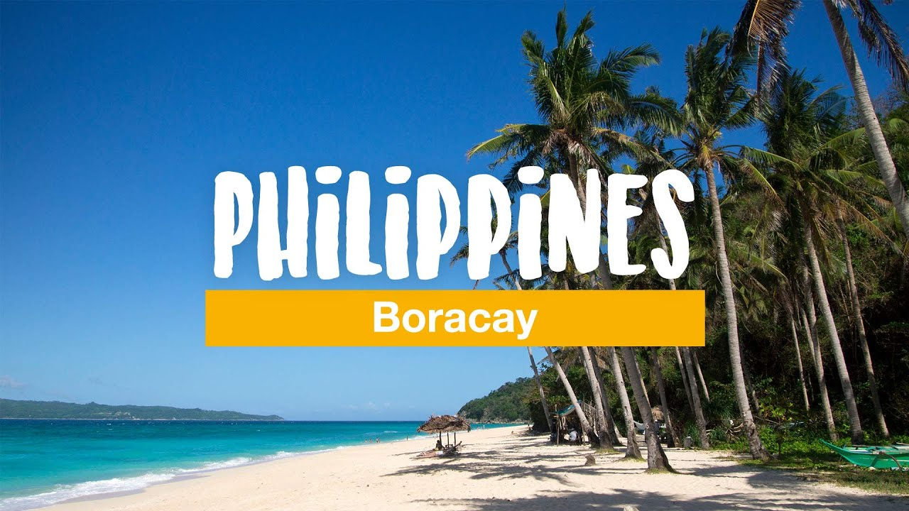
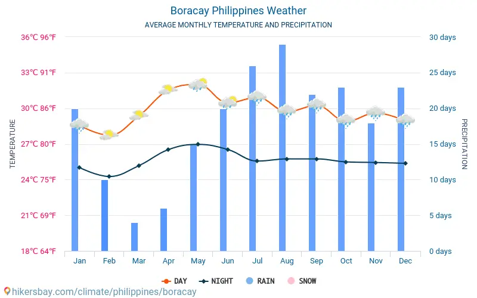

Escape to one of the best islands in the world, Boracay in the Philippines! Find out the best time to go, how to get there, the top things to do and see, where to eat, the best hotels and resorts to stay in, and other travel tips with this ultimate travel guide.
Boracay Island, one of the top beaches in the Philippines and one of the best Visayas tourist spots, is blessed with a long stretch of powdery white sand beach (called White Beach), crystal clear and azure waters, and a stunning sunset. The island doesn’t fall short on adventures and activities for people of all ages.
If you are going to Boracay to relax, try island-hopping, or experience water activities, you should take note of the weather during your target travel dates before booking your plane ticket. This is to avoid canceled plans and to lessen the hassle usually caused by unexpected rains and thunderstorms.
You can enjoy Boracay all year round, but the best season to experience the island and its beaches are from December to May, the dry season in the Philippines. You would be able to walk around the powdery white sand beaches of Boracay while taking in the warm summer sun. A lot of locals and international travelers visit the island during this time as well, so you can expect bars to be lively at night.
Boracay’s peak season is from March to May, the country’s summer months. During this period, Boracay becomes the go-to beach destination for locals. National holidays such as Christmas, New Year, Chinese New Year, and Lent or Holy Week (from Palm Sunday to Easter Sunday) are also peak seasons in Boracay
No matter what time of the year you choose, the weather will never be too chilly or too hot. The average high temperature is approximately 30 °C, while the average lows are at around 25 °C. The hottest month in Boracay usually falls from March to June, while the wettest month often falls from August to October.
Here's an overview of the monthly average temperature in Boracay:
Bring beach necessities such as a swimsuit, a rashguard, shirts, shorts, slippers, shades, goggles, towels, and a hat or cap. Wear sunblock to avoid getting sunburnt.